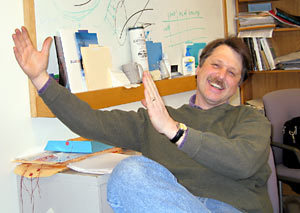

News Archives : 2004 : Craig Hunter Receives Tenure
by Charlie Schmidt
April 14, 2004
Craig Hunter has been named a Professor of Molecular and Cellular Biology at MCB. Hunter, who has taught at Harvard since 1997, studies the molecular pathways through which hereditary information is used to build embryos. Tenure at Harvard is the latest boost to a remarkable career that Hunter says was sparked by an undergraduate course in genetics, taken at the University of Oregon in Eugene. "That course posed the research questions I've been interested in ever since," he says. "Namely, how genes organize cells and how cells are organized into organisms. I found myself drawn to the molecular mechanisms of how hereditary information is read out during development."
Research in Embryology
At the University of Colorado, where he completed a Ph.D. in 1990, and then during a five-year post-doc in developmental biology at the University of California, San Francisco, Hunter laid the foundations for his current research. Much of his early work focused on embryonic pattern formation in Caenorhabditis elegans --in particular, the ancient pathways that govern the nematode's early stage growth. These investigations led to the identification of PAL-1; a "master-regulator" for posterior development in embryogenesis. Today, Hunter is investigating how PAL-1 activity is targeted to the posterior and also how the protein coordinates growth and pattern of the organisms back end. Among his key findings are that synthesis of PAL-1 is repressed until the embryonic four-cell stage, whereupon it is suddenly activated in the two posterior cells. PAL-1 then acts in the descendants of these cells to regulate a large suite of genes that organize the development of the posterior body and tail. Today, Hunter remains captivated by this universal and mysterious mechanism of gene regulation. Current studies investigate the activities of genes that regulate PAL-1 expression and function in the earliest stages of embryonic development.Mechanistic Insights on RNAi
Hunter came to Harvard just as a newly identified molecular pathway was taking researchers by storm: RNA interference, or RNAi. Today, this endogenous process, through which gene expression is controlled at the RNA level, is a major focus of his research. When he first became aware of RNAi, Hunter says, the phenomenon seemed almost too remarkable to be real. Scientists had observed an unusual phenomenon whereby genes both within and between plant cells could be selectively silenced during breeding. At the time, there was no explanation for this observation. But in 1998, it was shown that injections of double-stranded RNA could produce a similar gene-silencing effect in C. elegans . Tantalized by the possibility for new ways to manipulate and analyze genes, researchers around the world set out to investigate the mechanism of RNAi, which holds great promise for fundamental biology and drug development. Most of these initial efforts focused on the silencing effect in individual cells. "No one was looking at the more fascinating question of how gene-silencing information could be transmitted between cells," Hunter recalls. "So, we set out to identify that mechanism."Hunter's laboratory made a quick discovery: specifically, a group of genes with a clear role in intercellular RNAi transport. The discovery of these genes occurred through a multistep process: First, transgenic strains of C. elegans bred to express green fluorescence protein in adjacent tissues were constructed. Then, an additional transgene that expressed GFP double-stranded RNA in just one of the tissues was introduced into the strain . The double-stranded RNA silenced GFP expression not only in this tissue but in adjacent tissues as well by "systemic" RNAi. The resultant transgenic system was used to screen for mutants that had lost the ability to support systemic RNA silencing (i.e., silencing in a second cell or tissue). Mutations in five different genes were identified. These genes are designated Systemic RNAi Defective, or SID. Of them, SID-1 is currently the best characterized. According to Hunter, SID-1 encodes a large protein that spans the cell membrane several times, thereby creating a channel through which double-stranded RNA molecules--the triggers for RNA silencing--pass from one cell to the next.
This finding is important for several reasons. It provides mechanistic insights into systemic RNAi with broad implications for cell biology. And it also enables pharmaceutical opportunities: Drug companies want to treat genetic diseases with RNA-based drugs but they currently don't have a way to deliver the drugs to diseased cells and tissues. In fact, delivery is widely seen as the biggest barrier to RNAi exploitation for pharmaceutical aims. Could SID-1 provide a solution to the drug delivery problem? Hunter acknowledges the possibility is worth looking into. "C. elegans has a natural system for getting double-stranded RNA into the cell. So far, this activity has not been demonstrated in mammals. However, mammals do have SID-1-like proteins; thus a better understanding of the specificity and regulation of this system in C. elegans may teach us how similar systems in mammals can be modulated."
The other SID genes are currently under investigation, Hunter says. Preliminary results indicate that each has a distinct function, such as intercellular transport, cellular uptake, and export from tissues. But what the characterized genes have not yet explained, Hunter adds, is the physiological role of systemic RNAi in the organism, a phenomenon that seems to make little intuitive sense considering the potential for viral infection through this pathway. "From the perspective of C. elegans, a system that allows naked RNA to get into cells sounds ridiculous," Hunter says. "C. elegans should be exquisitely sensitive to viral [RNA]. There must be a reason for this and we'd like to understand it. It may be as simple as understanding the physiology of nematodes in their natural environment or it may point to some larger issue that we're not even aware of yet."
Hunter is currently advancing his RNAi studies by analyzing SID-1 homologues in other species. Some of this work is proceeding collaboratively with MCB Professors Doug Melton and Andy McMahon, who are providing guidance on the development of mouse models. Hunter says he's also taking advantage of the Harvard Center for Genome Research, which he describes as a "tremendous community resource for research infrastructure support and intellectual stimulation and a model for interdisciplinary programs."
Looking ForwardSo, how does Hunter perceive his new tenure? Reflecting on the achievement, Hunter says the opportunity for academic freedom is what he finds most rewarding. "It's an opportunity to step back and ask what's really new and interesting," he says. "I see this as an opportunity to look at the whole spectrum of biology to find something else that we can investigate. Like gene silencing - it just grabbed my attention and I didn't let go until we had an answer. I know there are other mysteries out there that aren't getting the attention they deserve."
In discussing his academic future at Harvard, Hunter also lauds the capability of his colleagues and students, whom he describes as among the best in the world. A singular pleasure comes from the experience of challenging his students to think harder than they've been expected to in the past; indeed he says his expectations from them are consistently met. "I couldn't imagine being anywhere else," Hunter says. "The most important thing in research is the people that you have around to talk to. It's great to get people excited about the work that you're doing and to in turn be excited by what they do. The challenge for us is to get more good people - to ensure that the people who come into this department are exciting and inquisitive."